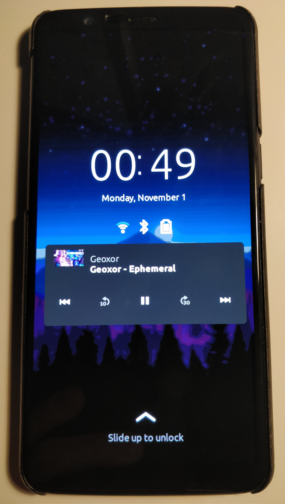

OnePlus 5 (oneplus-cheeseburger)
|
 OnePlus 5T with Phosh on 5.15.0 mainline kernel! | |
| Manufacturer | OnePlus |
|---|---|
| Name | 5 |
| Codename | oneplus-cheeseburger |
| Released | 2017 |
| Category | testing |
| Original software | Android |
| Original version | 7.1.1 |
| Extended version | 10 (on Linux 4.4) |
| postmarketOS kernel | 6.0 |
| Hardware | |
| Chipset | Qualcomm Snapdragon 835 (MSM8998) |
| CPU | Octa-core (4x 2.45 GHz Kryo 280 Gold + 4x 1.9 GHz Kryo 280 Silver) |
| GPU | Adreno 540 |
| Display | 1080x1920 Optic AMOLED |
| Storage | 64/128 GB UFS 2.1 |
| Memory | 6/8 GB LPDDR4X RAM |
| Architecture | aarch64 |
| Unixbench Whet/Dhry score | 3919.7 |
{kind=link}
| USB Networking |
Works
|
|---|---|
| Flashing |
Works
|
| Touchscreen |
Works
|
| Display |
Works
|
| WiFi |
Works
|
| FDE |
Works
|
| Mainline |
Works
|
| Battery |
Works
|
| 3D Acceleration |
Works
|
| Audio |
Broken
|
| Bluetooth |
Works
|
| Camera |
Broken
|
| GPS |
Works
|
| Mobile data |
Broken
|
| SMS |
Broken
|
| Calls |
Broken
|
| USB OTG |
Partial
|
| NFC |
Works
|
| Accelerometer |
Broken
|
|---|---|
| Magnetometer |
Broken
|
| Ambient Light |
Broken
|
| Proximity |
Broken
|
| Hall Effect |
Works
|
| Barometer | |
| Power Sensor | |
| Camera Flash | |
|---|---|
| Keyboard | |
| Touchpad | |
| USB-A | |
| HDMI/DP | |
| Ir TX |
Unavailable
|
| Ir RX | |
| Stylus | |
| Haptics | |
| Ethernet | |
| FOSS bootloader | |
|
This device is based on the Snapdragon 835. See the SoC page for common tips, guides and troubleshooting steps |
The OnePlus 5T is very similar to the OnePlus 5; for information specific to the 5T, also read OnePlus 5T (oneplus-dumpling).
Entering fastboot mode
The OnePlus 5/5T uses fastboot as its flashing protocol.
Unplug from USB, hold Power and Volume Up until you see FastBoot Mode text.
Installation
Prerequisites
Fastboot
Install fastboot on your host, refer to Google for instructions.
Unlocking the bootloader
WARNING: Doing this will delete ALL your data on the device, so backup all your data before continuing!
Before flashing postmarketOS you have to unlock your bootloader. The following is all that's needed to do this:
1. Go to Settings, About and tap on the Build number 7 times until you get a message saying you are now a developer.
2. Go back to Settings, System and Developer options to enable OEM unlocking
3. Refer to entering fastboot mode above and re-attach the USB cable afterwards. Run the following command on your host:
fastboot oem unlock
4. Read the message displayed on your device screen, once happy confirm the unlock and continue to installing postmarketOS.
Installing postmarketOS
Follow the usual flashing guide via pmbootstrap.
NOTE: ONLY choose alpine kernel if you accept it will have MUCH less overall working features, otherwise always pick mainline!Downstream kernel port is also still available as cheeseburger-downstream codename, but usage of it is strongly discouraged and it's completely unmaintained! |
Incorrect touchscreen orientation
On some user interfaces such as Plasma Mobile you may have the touchscreen incorrectly oriented by 180 degrees (upside down); to fix that run the following in a root shell:
echo 'ACTION=="add|change", KERNEL=="event[0-9]*", ATTRS{name}=="Synaptics s3508", ENV{LIBINPUT_CALIBRATION_MATRIX}="-1 0 1 0 -1 1"' | sudo tee /etc/udev/rules.d/21-oneplus5-ts.rules
After that simply reboot to apply the new calibration matrix. Now the touchscreen should at least match the incorrectly upside-down display output so you can go in Settings > Display Configuration and select the inverted screen rotation option which will rotate the display to match the expected normal display rotation.
I've still not added this as a part of the Device package because it causes the rotation to be broken in other environments, especially so in Xorg-based ones, but if that really remains the only problematic one perhaps it can be added as a subpackage with some install_if directive.
See issue: https://invent.kde.org/teams/plasma-mobile/issues/-/issues/160
Recently (2022-11-15) an MR to kwin was merged that should address this issue: https://invent.kde.org/plasma/kwin/-/merge_requests/2081; could possibly be backported to v5.26.4?
Modem stability
If Wi-Fi disconnects for any reason (including sleep, signal strength loss etc.) the modem remoteproc will crash and may not recover until a reboot.
The ipa kernel module has been blocked from auto-loading due to causing various overall issues with the system. If you want to test ModemManager already (since mainline kernel v6.0) though you can just load it manually:
$ sudo modprobe ipa $ sudo rc-service modemmanager restart
LEDs
The LEDs present on the device can be controlled via sysfs by writing values to their brightness control files as root. Here are some examples:
Screen backlight brightness (0-255, 0-1023 on 5T)
echo 255 > /sys/class/backlight/c994000.dsi0/brightness
Notification light brightness (0-255)
echo 255 > /sys/class/leds/notification-led/brightness
Notification light color (0-255, R G B), e.g. green
echo 0 255 0 > /sys/class/leds/notification-led/multi_intensity
The backlight for capacitive buttons can be enabled (1) or disabled (0)
echo 1 > /sys/class/leds/white\:kbd_backlight/brightness
Control of the rear camera flashlight isn't yet possible; it's missing a driver on mainline.
Partition layout
oneplus5:~# fdisk -l -o Device,Start,End,Sectors,Size,Name /dev/sda
Disk /dev/sda: 113.55 GiB, 121911640064 bytes, 29763584 sectors Disk model: KLUDG8V1EE-B0C1 Units: sectors of 1 * 4096 = 4096 bytes Sector size (logical/physical): 4096 bytes / 4096 bytes I/O size (minimum/optimal): 8192 bytes / 8192 bytes Disklabel type: gpt Disk identifier: 98101B32-BBE2-4BF2-A06E-2BB33D000C20 Device Start End Sectors Size Name /dev/sda1 6 7 2 8K ssd /dev/sda2 8 8199 8192 32M persist /dev/sda3 8200 73735 65536 256M cache /dev/sda4 73736 73991 256 1M misc /dev/sda5 73992 74119 128 512K keystore /dev/sda6 74120 74247 128 512K frp /dev/sda7 74248 76807 2560 10M oem_dycnvbk /dev/sda8 76808 79367 2560 10M oem_stanvbk /dev/sda9 79368 79623 256 1M param /dev/sda10 79624 81647 2024 7.9M reserve1 /dev/sda11 81648 85695 4048 15.8M reserve2 /dev/sda12 85696 85823 128 512K config /dev/sda13 85824 29763578 29677755 113.2G userdata
oneplus5:~# fdisk -l -o Device,Start,End,Sectors,Size,Name /dev/sdb
Disk /dev/sdb: 4 MiB, 4194304 bytes, 1024 sectors Disk model: KLUDG8V1EE-B0C1 Units: sectors of 1 * 4096 = 4096 bytes Sector size (logical/physical): 4096 bytes / 4096 bytes I/O size (minimum/optimal): 8192 bytes / 8192 bytes Disklabel type: gpt Disk identifier: 98101B32-BBE2-4BF2-A06E-2BB33D000C20 Device Start End Sectors Size Name /dev/sdb1 6 1018 1013 4M xbl
oneplus5:~# fdisk -l -o Device,Start,End,Sectors,Size,Name /dev/sdc
Disk /dev/sdc: 4 MiB, 4194304 bytes, 1024 sectors Disk model: KLUDG8V1EE-B0C1 Units: sectors of 1 * 4096 = 4096 bytes Sector size (logical/physical): 4096 bytes / 4096 bytes I/O size (minimum/optimal): 8192 bytes / 8192 bytes Disklabel type: gpt Disk identifier: 98101B32-BBE2-4BF2-A06E-2BB33D000C20 Device Start End Sectors Size Name /dev/sdc1 6 1018 1013 4M xblbak
oneplus5:~# fdisk -l -o Device,Start,End,Sectors,Size,Name /dev/sdd
Disk /dev/sdd: 128 MiB, 134217728 bytes, 32768 sectors Disk model: KLUDG8V1EE-B0C1 Units: sectors of 1 * 4096 = 4096 bytes Sector size (logical/physical): 4096 bytes / 4096 bytes I/O size (minimum/optimal): 8192 bytes / 8192 bytes Disklabel type: gpt Disk identifier: 98101B32-BBE2-4BF2-A06E-2BB33D000C20 Device Start End Sectors Size Name /dev/sdd1 6 13 8 32K reserve /dev/sdd2 14 14 1 4K cdt /dev/sdd3 15 270 256 1M ddr /dev/sdd4 271 32762 32492 126.9M last_parti
oneplus5:~# fdisk -l -o Device,Start,End,Sectors,Size,Name /dev/sde
Disk /dev/sde: 4 GiB, 4294967296 bytes, 1048576 sectors Disk model: KLUDG8V1EE-B0C1 Units: sectors of 1 * 4096 = 4096 bytes Sector size (logical/physical): 4096 bytes / 4096 bytes I/O size (minimum/optimal): 8192 bytes / 8192 bytes Disklabel type: gpt Disk identifier: 98101B32-BBE2-4BF2-A06E-2BB33D000C20 Device Start End Sectors Size Name /dev/sde1 6 133 128 512K rpm /dev/sde2 134 261 128 512K rpmbak /dev/sde3 262 773 512 2M tz /dev/sde4 774 1285 512 2M tzbak /dev/sde5 1286 1413 128 512K hyp /dev/sde6 1414 1541 128 512K hypbak /dev/sde7 1542 1545 4 16K sec /dev/sde8 1546 1673 128 512K pmic /dev/sde9 1674 1801 128 512K pmicbak /dev/sde10 1802 29961 28160 110M modem /dev/sde11 29962 34057 4096 16M dsp /dev/sde12 34058 35081 1024 4M mdtpsecapp /dev/sde13 35082 36105 1024 4M mdtpsecappbak /dev/sde14 36106 36361 256 1M dip /dev/sde15 36362 44553 8192 32M mdtp /dev/sde16 44554 46601 2048 8M abl /dev/sde17 46602 48649 2048 8M ablbak /dev/sde18 48650 52745 4096 16M LOGO /dev/sde19 52746 69129 16384 64M boot /dev/sde20 69130 85513 16384 64M boot_aging /dev/sde21 85514 871945 786432 3G system /dev/sde22 871946 888329 16384 64M recovery /dev/sde23 888330 888330 1 4K devinfo /dev/sde24 888331 888586 256 1M bluetooth /dev/sde25 888587 888714 128 512K keymaster /dev/sde26 888715 888842 128 512K keymasterbak /dev/sde27 888843 888970 128 512K cmnlib /dev/sde28 888971 889098 128 512K cmnlibbak /dev/sde29 889099 889226 128 512K cmnlib64 /dev/sde30 889227 889354 128 512K cmnlib64bak /dev/sde31 889355 889418 64 256K apdp /dev/sde32 889419 889482 64 256K msadp /dev/sde33 889483 889483 1 4K dpo /dev/sde34 889484 897839 8356 32.7M splash /dev/sde35 897840 897840 1 4K limits /dev/sde36 897841 898096 256 1M toolsfv /dev/sde37 898097 900144 2048 8M logfs /dev/sde38 900145 900656 512 2M sti /dev/sde39 900657 900688 32 128K devcfg /dev/sde40 900689 917072 16384 64M logdump /dev/sde41 917073 917104 32 128K storsec /dev/sde42 917105 917136 32 128K storsecbak /dev/sde43 917137 917648 512 2M fw_4j1ed /dev/sde44 917649 918160 512 2M fw_8v1ee /dev/sde45 918161 918672 512 2M fw_4g9n4 /dev/sde46 918673 919184 512 2M fw_4t0n8 /dev/sde47 919185 1048570 129386 505.4M minidump /dev/sde48 927377 927377 0 0B last_parti
oneplus5:~# fdisk -l -o Device,Start,End,Sectors,Size,Name /dev/sdf
Disk /dev/sdf: 1.51 GiB, 1610612736 bytes, 393216 sectors Disk model: KLUDG8V1EE-B0C1 Units: sectors of 1 * 4096 = 4096 bytes Sector size (logical/physical): 4096 bytes / 4096 bytes I/O size (minimum/optimal): 8192 bytes / 8192 bytes Disklabel type: gpt Disk identifier: 98101B32-BBE2-4BF2-A06E-2BB33D000C20 Device Start End Sectors Size Name /dev/sdf1 6 517 512 2M modemst1 /dev/sdf2 518 1029 512 2M modemst2 /dev/sdf3 1030 1541 512 2M fsg /dev/sdf4 1542 1542 1 4K fsc /dev/sdf5 1543 1670 128 512K md5 /dev/sdf6 1671 263814 262144 1G vendor /dev/sdf7 263815 393182 129368 505.4M reserve3 /dev/sdf8 267863 267863 0 0B last_parti
Community Info
postmarketOS users that own the device
- Bdju (Notes: Android backup)
- Dartvader316 (Notes: 8/128 GB)
- Deathmist (Notes: 8/128 GB model)
- EspiDev (Notes: 6/64 GB Plasma Mobile)
- Frost I7 (Notes: LOS20.)
- Langfingaz (Notes: Running LineageOS 20)
- Mtek89 (Notes: Running LineageOS 19.1)
- Poipa
Maintainers
Contributors
- Deathmist
- R0551 (mainlining)
See also
- Device package
-
Kernel package (
mainline) or alternatively linux-edge (alpine) - Firmware package
- pmaports!3336 Alpine linux-edge enablement merge request
- pmaports!2591 Mainline enablement merge request
- pmaports!908 Initial merge request
- Close to mainline kernel source
- Linux mainline kernel source (torvalds)
- LineageOS downstream kernel fork
- Unmaintained postmarketOS downstream kernel package
- Wiki page for device
- OnePlus 5T (oneplus-dumpling)